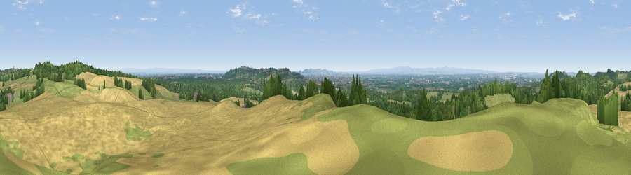

Viewpoint near Manley
#4562 in England · top 8% of its area beats it · near ManleyWhere it is
The exact computed spot (SJ 51725 72625). Click the marker for map links.
The view, rendered

A 360° render of this exact spot computed from the terrain model, tree cover and land cover — summer colours, afternoon light, calibrated against photographs of famous viewpoints. Real trees, hedges and buildings will differ in detail.
The panorama
Grey silhouette: terrain skyline in each direction (720 bearings, Earth curvature and refraction included). Dashed green: skyline with trees (+15 m) and buildings (+8 m) as obstacles. Blue strip: how far the ground is visible on each bearing.
Where the view opens
Wedge length = distance to the farthest visible ground on that bearing (vegetation-aware). Rings at 10, 25 and 50 km.
What fills the view
37% grassland · 37% cropland · 25% woodland · 1% built-up
Angular shares of the visible panorama (visual magnitude), not map area. Landscape diversity 0.51 (0–1 Shannon).
Key numbers
More beautiful places nearby
The staircase of upgrades: each row has a higher view potential than everything closer. Driving times are estimates from straight-line distance, calibrated against real road routing — check an actual route before setting out.
| Place | Direction | Drive | Score |
|---|---|---|---|
| Viewpoint near Overton | NNE · 4 km | ~9 min | 72.3 |
| Helsby Hill | NW · 4 km | ~9 min | 74.6 |
| Viewpoint near Bulkeley | S · 17 km | ~30 min | 76.8 |
| Viewpoint near Harthill | S · 18 km | ~30 min | 80.5 |
| White Brow | NNE · 42 km | ~62 min | 82.9 |
| Viewpoint near Halfway House | SSW · 63 km | ~86 min | 83.3 |
| Viewpoint near Little Wenlock | S · 65 km | ~88 min | 84.2 |
| The Wrekin | S · 65 km | ~88 min | 85.0 |
53.24843, -2.72494 · source: screening · position refined by local search. Computed location — check access rights before visiting.